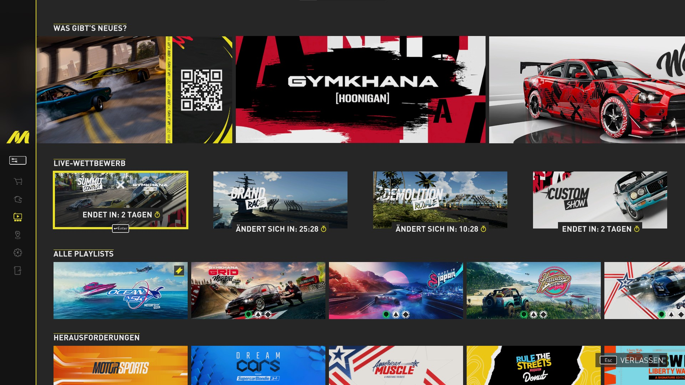

1
2
Vorgänger des Spiels
The Crew (2014)
Der Ursprung von The Crew liegt im Jahr 2014, als Ubisoft den ersten Teil der Serie veröffentlichte.
Das Spiel präsentierte eine offene Welt, die die gesamten Vereinigten Staaten umspannte. Spieler
konnten durch verschiedene Regionen reisen und an Rennen teilnehmen, um schließlich die Spitze der
illegalen Straßenrennen-Szene zu erreichen. Die Idee einer riesigen offenen Welt und die Vielfalt
der Landschaften waren wegweisend für die Serie.
The Crew 2 (2018)
Das Jahr 2018 brachte die nächste Stufe der Evolution mit The Crew 2. Anstatt sich auf Autos zu
beschränken, führte der zweite Teil die Idee des Multi-Motorsports ein. Spieler konnten zwischen
Autos, Motorrädern, Booten und Flugzeugen nahtlos wechseln, was dem Spiel eine völlig neue Dimension
verlieh. Die offene Welt wurde erneut erweitert, diesmal um die gesamten USA samt ihrer Gewässer und
Lüfte.
Wo spielt The Crew Motorfest
The Crew Motorfest hat seine Feste Position in Hawaii und ist aufgeteilt in 5 untere Positionen: Leeward Küste, North Shore, Windward küste, Zentral und Süden. Diese Stadorte sind in weiter kleine aufgeteilt. Darunter Kahuku, Khana Bay, Kahaluu und die Hanauma Rennstrecke. Das neuste Update hat den Gymkhana Grid Park ins Spiel gebracht. Das Gymkhana Teretorium ist in zusammenarbeit mit der Tuningmarke Hoonigan entstanden. Sie haben ihr bekanntes und beliebtes Auto den "Hoonicorn" ins Spiel eingebracht.Storyline
The Crew Motorfest ist in 16 Playlists aufgeteilt, Für jede Playlist erhälst du Belohnungen.

Ziel des Spiels
Das Ziel von The Crew Motorfest, ist alle Playlisten abzuschließen und alle Fahrzeuge zu Besitzen. Exklusive Fahrzeuge gibt es auch. Durch den The Crew Motorfest Summit Contest kannst du deine Garage mit exklusiven Fahrzeugen füllen. Der Summit contest ist in verschiedene Ränge aufgeteilt, Bronze (in Summit einspielen), Silber (30.000 - 20.000), Gold (20.000-10.0000) und Platin(10.000-1). Um Exklusive Autos zu erspielen musste du im Summit Platin erreichen. Ein Weg exklusive fahrzeuge zu erlangen ist auch ein Update, welches jeden Monat kommt. Du musst 4 Level abschließen im Bereich von Rennenfahren, Erkundung und Contests um in ein Levelsystem zu kommen in welchen man bis Level 100 für alle 10 Level Belohnungen bekommt.
Besonderheiten
Besonderheiten in the Crew Motorfest bestehen darin, dass Ivory Tower und Ubisoft sich nicht nur die Vorgänger von der Spielserie eingebaut haben, sondern auch Elemente aus verschiedenen Spielen wie Das Zurückspulen in Forza Horizon 5. Ubisoft kauft auch alle Lizensen di sie benötigen um ihre Autos ins Spiel zu bringen. Ebenso gibt es diesmal mehr Fahrzeuge als jemals zu vor, es gibt über 600 Stück.